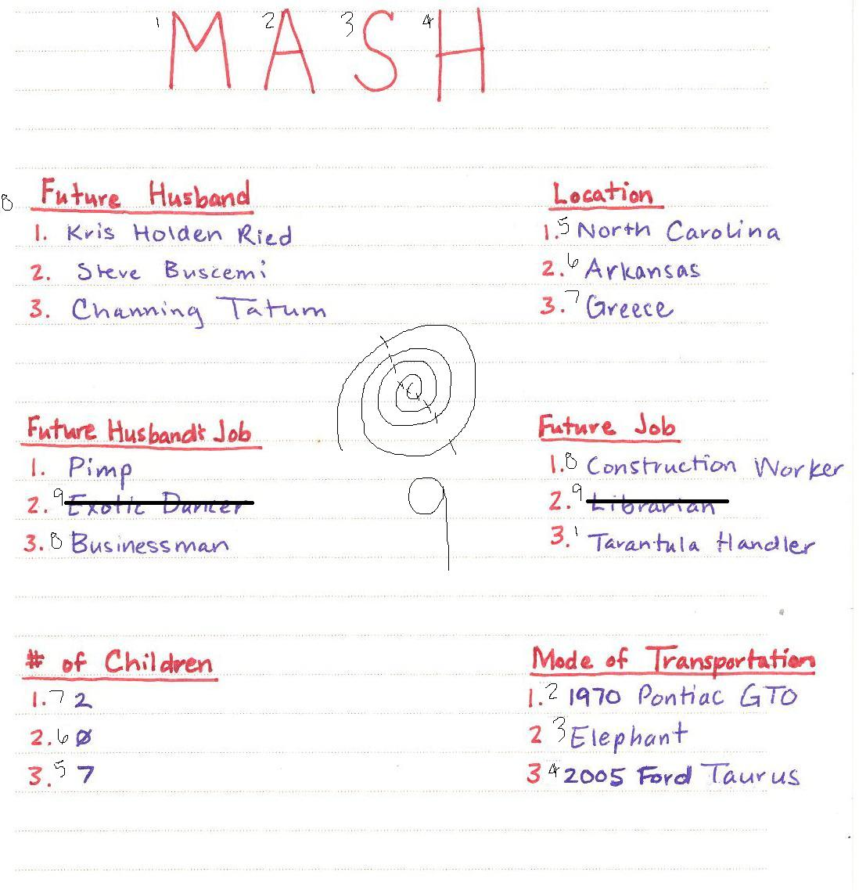

REQUIRES
At least 2 people, but more people make for more fun
Pen and paper
GAME PLAY
At the top of the page, start by writing the initials M.A.S.H., an acronym meaning mansion, apartment, shack, or house. Ask the player to think of four potential spouses — classmates, fictional characters, famous hunks or beauties — and write these names in the left margin of the paper. Elicit four numbers representing the number of children they will have, and write them at the bottom of the page. In the right margin record four vehicle types (bicycle, monster truck, Ferrari) the player likes.
In the middle of the page, begin slowly drawing a spiral out from the center. At any point during the drawing, the player is allowed to call out "Stop!" Then the fortune teller counts the number of rings across the diameter of the spiral. If, for example, that number is "9," begin at the letter "M" and count each selection, moving around the outside of the page through the categories. Eliminate every ninth entry. Continue around the circle, eliminating entries, but do not count any entry once it has been eliminated. When only one selection is left in each category, that selection becomes part of the player's fortune.
OBJECTIVE
To determine the fortune of the player, the fortune teller reads the player's selections back to him. For example, "You will marry Brad Pitt, have 6 children, drive a Monster truck, and live in an apartment."
MIX IT UP
Add another category to get more specific about the player's future:
- Where you will live — geographic location
- How many years you will live
- Pet
- Occupation